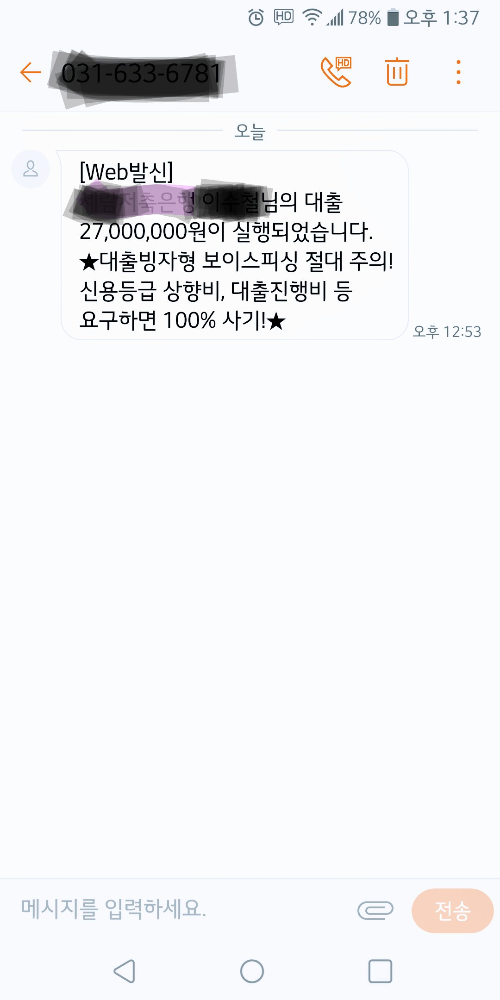

[개인회생자대출] 김용혁이사님 감사합니다!!
회생기간 : 50/60회차
1회 납입 : 146만
직장 : 12년차
연봉 : 약 5400만
기대출 : 대부2700만, 24%
3개월전 기존 대출과 개인회생 분납 및 잔여회차 납입조건으로 김용혁이사님이 대출을 알아봐주셔서 대부업에서 2700만원을 대출 받았었습니다. 그때 어려운 조건에서도 여러방면으로 알아봐주신 덕분에 대출을 받아 급한불을 끌 수 있었습니다.
그리고, 3개월 후에 좀더 낮은 급리로 알아봐 주시겠다고 하시면서 마무리가 됐었는데요. 어제 3개월이 지나 다시 연락드렸는데 방갑게 인사해주시면서 친절하게 저축은행쪽으로 대환을 알아봐 주셨습니다. 나중에 면책까지 생각해주시며, 저축은행이 신용관리에 대부업보다 훨씬 좋다고 저축은행부터 진행해 주셨습니다. 김용혁 이사님께서 힘써주시는 덕분에 저축은행에서 지난번 보다 낮은 금리로 대환을 할 수가 있었고, 매달 납입금도 줄일수 있었습니다. 다시한번 감사드립니다. 내년에 면책되면 더 낮은 금리로 알아봐주신다고 하셨는데, 그말씀이 더욱더 믿음이가고 기분이 좋아지네요. 이번에도 정말 감사합니다.
